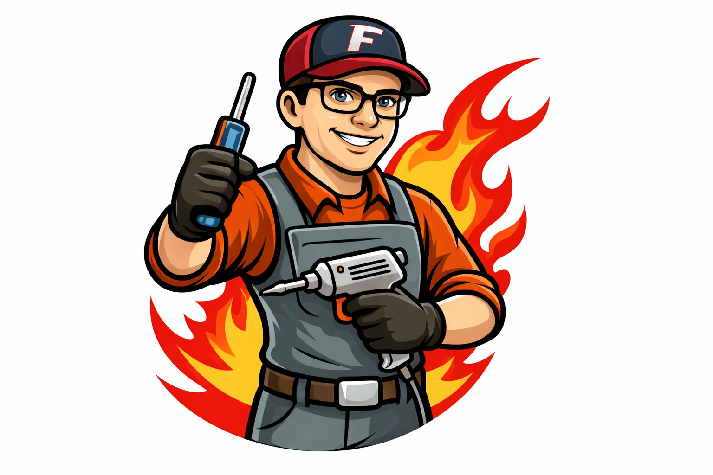
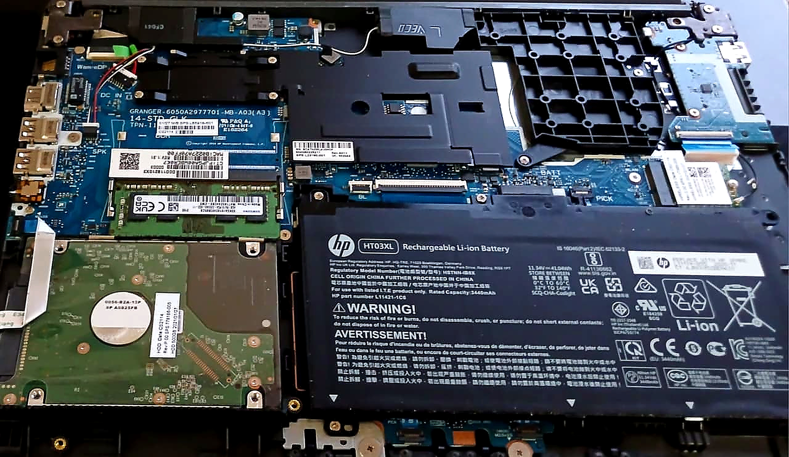

Amor, pasión e Ingeniería detrás de cada tornillo
¿Qué es FixorLab? ¿Qué lo diferencia de un servicio técnico convencional?
FixorLab no nació en una caja de herramientas, ni de un día para otro, nació de una frustración académica. Como estudiante de Ingeniería en Informática, vi que al mercado le faltaba rigor. La gente entrega sus herramientas de trabajo, sus dispositivos más preciados, más valiosos a cualquiera, y eso es un riesgo de seguridad enorme.
En el laboratorio del Tío Fixor, tratamos a cada equipo como una pieza de ingeniería. No solo la "limpiamos"; sino que la Optimizamos, Blindamos y Certificamos. Tomamos tu hardware y lo llevamos a su mejor versión técnica posible, con la transparencia de un informe profesional.
Usa el Menú para ver nuestros servicios 😏


Precios Base
| Servicio | Precio |
|---|---|
| Mantención Estándar Limpieza profunda + Pasta térmica de calidad (Arctic MX-4) |
$20.000 |
| Mantención Extreme Gamer Pasta térmica de alto rendimiento (Cooler Master) + Limpieza de GPU + Gestión de cables |
$30.000 |
Precios Base
| Servicio | Precio |
|---|---|
| Mantención General Desarme completo + Limpieza de ventiladores + Pasta térmica de calidad (Arctic MX-4) |
$30.000 |
| Notebook Gamer / Workstation Limpieza de disipadores densos + Thermal pads (si aplica) + Pasta térmica de alto rendimiento (Cooler Master) |
$38.000 |
Precios Base en instalación de Software
| Servicio | Precio |
|---|---|
| Formateo Inicial Windows + Drivers + Navegador + AdBlock |
$18.000 |
| Formateo Full + Respaldo Todo lo anterior + Office + Respaldo (hasta 100GB) |
$25.000 |
Precios Base Consolas y Mandos
| Servicio | Precio |
|---|---|
| Limpieza PS4 / Xbox One Cambio de pasta térmica + reducción de ruido y temperatura (adiós turbina) |
$25.000 |
| Limpieza de Mandos Limpieza externa profunda + Desinfección + Contact Cleaner en sticks |
$8.000 |
Precios de los COMBOS del Tío Fixor
| Pack | Precio |
|---|---|
| Pack Fixor PC (Full) Mantención Estándar + Formateo Full |
$40.000 |
| Pack Fixor Notebook (Full) Mantención General + Formateo Full |
$45.000 |
| Pack Fixor Consolas (Full) Consola + 1 Mando + Testeo de Estrés |
$30.000 |
| Adicional: +1 Mando Segundo mando en el mismo combo |
$5.000+ |
Precios de productos Reacondicionados
Esta sección estará habilitada próximamente...
¿Cómo funciona la entrega y Retiro en FixorLab?
Nuestro Laboratorio es la casa del Tío Fixor 🙌
Cómo funciona el modo de entrega de dispositivos:
Contamos con 3 opciones siempre pensando y destacando la Seguridad ante todo, tanto para nuestros clientes como para el Tío Fixor:
- Nos juntamos en punto céntrico (un mall, una plaza, biblioteca)
- Puedes venir directamente a la casa del Tío Fixor a dejar tu Equipo
- O que el Tío Fixor vaya directo a tu casa buscar el equipo (cargo adicional entre +$5.000 a $8.000) dependiendo de las distancias y tiempos del Tio Fixor.
¿Cómo funciona la Garantía en FixorLab?
PROTEGE LO QUE TE IMPORTA
El servicio que ofrecemos en FixorLab cuenta con una garantía de 30 días corridos a partir del día de entrega, que cubre:
- Cualquier falla derivada de la mano de obra (ensamblaje).
- Problemas con la aplicación de pasta térmica o de temperaturas.
- Estabilidad del Sistema (en caso de optimización o formateo).
Cualquier duda o consulta respecto a la Garantía o cualquier otro servicio, no dudes en consultar.
⚠️TÉRMINOS Y CONDICIONES⚠️
La garantía quedará anulada de inmediato si:
- El equipo presenta daños físicos posteriores al servicio entregado (golpes, caídas o contacto con líquidos).
- El equipo es abierto o intervenido por el usuario o por terceros que sean ajenos a FixorLab.
- Se eliminan o dañan los sellos de seguridad térmicos colocados.
"Cada intervención en nuestro laboratorio se rige bajo estrictos protocolos de ingeniería y trazabilidad de componentes."
Si tienes dudas o consultas respecto a cómo funciona la Garantía, habla con El Tío Fixor. Analizaremos el caso juntos para encontrar la solución técnica más adecuada para tu situación.